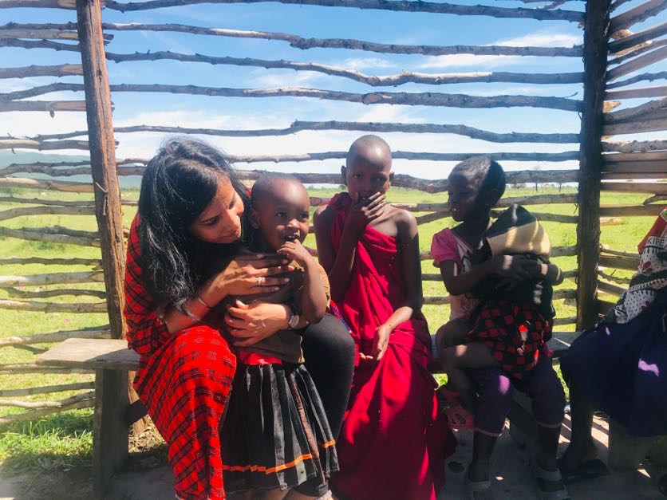
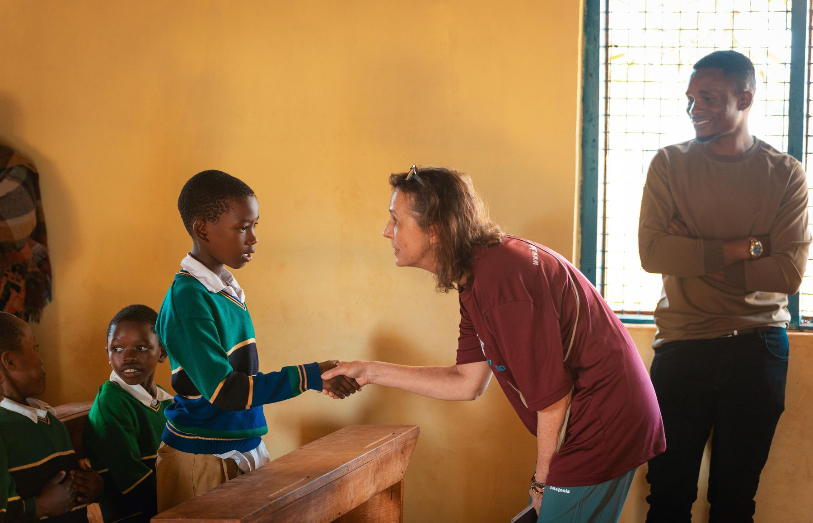

Since its establishment, Habari Foundation has remained committed to creating positive change beyond the classroom. Alongside supporting vulnerable children and expanding access to education, we invest in the wider community by empowering local women, supporting volunteer teachers, and creating opportunities for mountain guides and porters to grow professionally and improve their livelihoods.
A child’s chance to learn depends on the adults around them — a parent who can pay for a uniform, a teacher who stays in the classroom, a household with a steady income. These three projects support those people directly.

Habari Foundation provides local women with US$300–US$500 in small-business start-up capital, helping them establish income-generating activities, meet essential household needs, and support their children.
In many of the families we work with, it is a mother or grandmother who carries the cost of food, health care and school. When that income is uncertain, a child’s education is often the first thing put at risk. A small, well-planned business can change that — turning a one-off gift into income that keeps coming back to the household.
Through this initiative, we promote financial independence, strengthen families, and create opportunities for a more secure future.
Women are identified through our household visits, partner schools and local leaders — people who know the family’s circumstances.
Each woman chooses an activity that fits her skills, her community and the time she has, and we talk through what the start-up will need.
Start-up capital of US$300–US$500 helps cover the stock, tools or equipment needed to begin earning.
We keep in touch with families so we understand how the household and the children are doing as the business grows.
Help a woman start her business. Contact our team to learn about current needs and how your gift can be used.
Support the Women Project
Habari Foundation recognizes the vital role volunteer teachers play in shaping children’s futures. To support their dedication and enable them to continue serving in the schools we support, the foundation provides each volunteer teacher with a monthly salary, paid on time.
Volunteer teachers often step in where classrooms are crowded and staff are few. Without a reliable income, even the most committed teacher may have to leave for other work — and the children lose a familiar face and a steady routine. A salary that arrives every month, on time, lets teachers plan their lives and stay with their pupils.
By supporting teachers, we strengthen education and create better learning opportunities for children.
A monthly salary, paid on time, for each volunteer teacher in the schools we support.
Teachers can keep serving the same schools, so children learn with people they know and trust.
Teacher support works hand in hand with our education program — sponsorship gets children into class; teachers keep them learning.
Support a teacher. Contact us to learn about current teaching needs, funding requirements, and available opportunities.
Ask About Teacher SupportThrough its connection with Habari Adventure, Habari Foundation supports mountain guides with professional training during the April and May low season to strengthen their skills and prepare for the upcoming climbing season.
The foundation also supports eligible porters with quality hiking equipment and health insurance, while selected porters aspiring to become guides receive full sponsorship for the US$400 training course at the College of African Wildlife Management (Mweka), creating opportunities for career advancement within the tourism industry.
Porters and guides make every Kilimanjaro climb possible. Their work is physically demanding, exposed to cold and altitude, and tied to the climbing seasons. Good equipment, health cover and a clear path to better-paid work help them look after themselves and their families.
Eligible porters receive quality hiking equipment and health insurance.
Selected porters who want to become guides are fully sponsored for the US$400 course at the College of African Wildlife Management, Mweka.
Qualified guides join professional training each April and May, ready for the next climbing season.
Climbing Kilimanjaro? Our charity climbs connect your journey with children’s education in Moshi.
Explore Charity Climbs Support Guides & PortersAt Habari Foundation, we believe that empowering people creates lasting change. By investing in education, women’s livelihoods, and professional development, we help individuals strengthen their families, pursue new opportunities, and contribute to a stronger community.
“When we invest in kids, we build brighter futures for everyone.”
habarifoundation@gmail.com +255 754 044 692 Moshi, Kilimanjaro, Tanzania